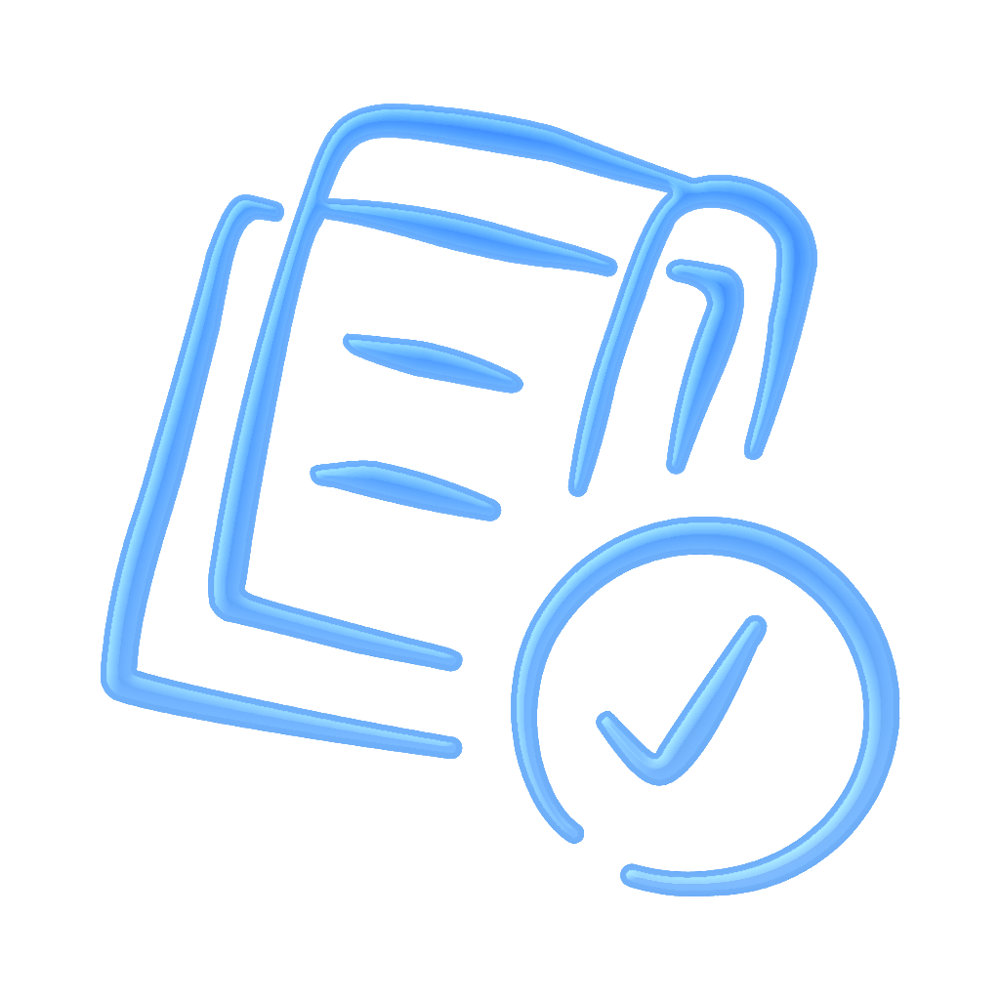
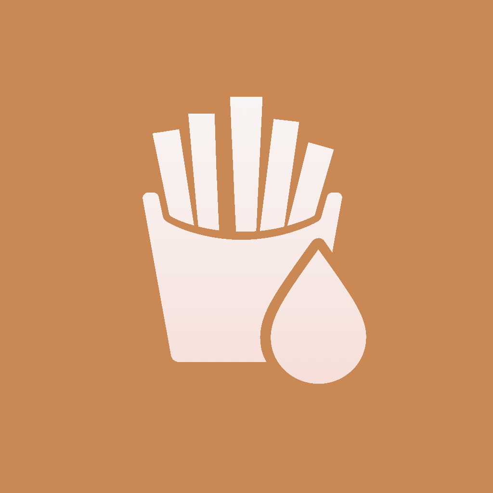

|  | My Tasks"My Tasks" is not just a to-do or reminder app — it's your regular to-do list for everything that keeps coming back. Instead of scheduling, checking off and making tasks disappear, your tasks will always stay in your list here. This way you build a regular routine for things that need to be done regularly. For each task, you can see when it was last performed and how often you have already done it. Easily set reminders per task. Via the badge indicator, you can immediately see whether a task needs to be done again or is about to reach its next moment. No time for once? Skip a task — you'll just be reminded later. Nothing gets "gone", everything remains part of your fixed overview. Divide your tasks into categories, so that you quickly get a clear list for each topic. This way everything remains structured and you always know what will come back. "My Tasks" is made for maintenance, routines, and recurring responsibilities — not for throwaway tasks. |
|  | Fryer Oil CounterDo you sometimes wonder if it's not time to change your cooking oil? How many times have you baked fries... And how many times can you continue safely? With the "Frying Oil Counter" you can easily keep track of how many frying sessions you have already done per fryer. You set the maximum number of baking sessions in advance and the app clearly shows how many are left. This way you always know when it's time for fresh oil. In addition, you can set reminders on the days that you normally fry fries. This way you will automatically receive a notification and you will never forget to check your oil again.
|
Need help or have questions about this app?
You can contact us via email: